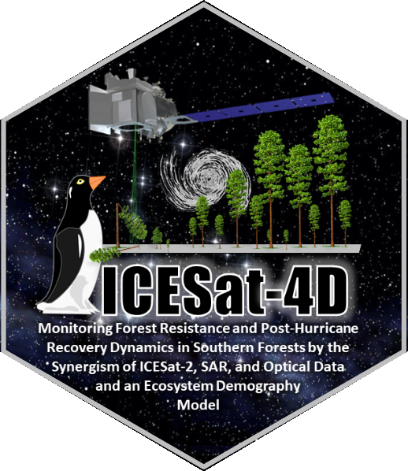
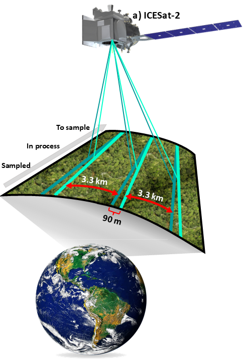
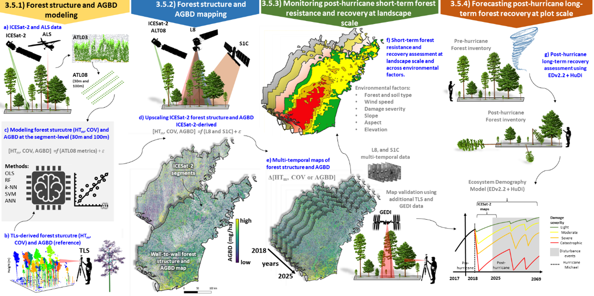
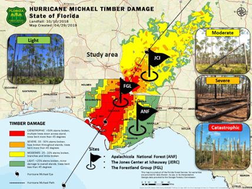
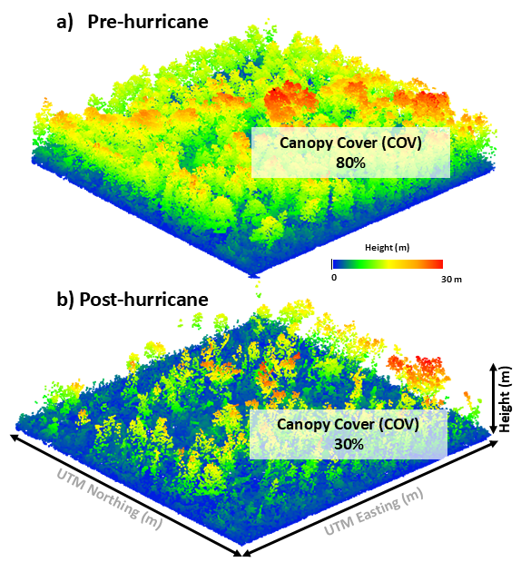
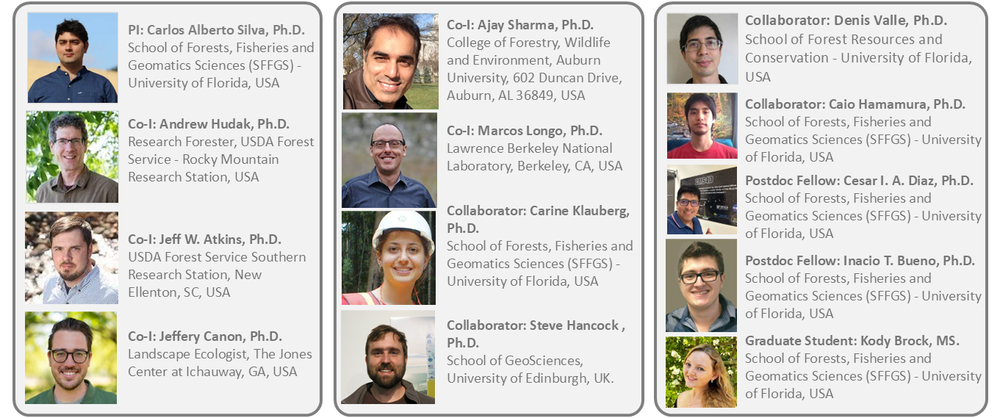

1. OverviewRecent advances in lidar remote sensing have demonstrated the potential to map for-est structure and AGBD changes and possibly map post-hurricane damage severity and moni-tor forest recovery. NASA’s ICESat-2 satellite mission, launched on September 15th 2018 and initially for a nominal three-year mission, is a photon-counting lidar system designed primarily to measure ice sheet elevation and sea ice thickness, but can also measure 3D forest structure globally and therefore, can be used for measuring forest structure attributes, such as forest height, cover and AGBD. On-board ICESat-2, the Advanced Topographic Laser Altimeter System (ATLAS) operates at 532 nm and fires pulses at a rate of 10 kHz, which illuminates, on the Earth’s surface, footprints of ~13 m diameter, with subse-quent footprints spaced every 70 cm along six ground tracks. The Temporal Resolution of ICESat-2 is 91 days. Two ICESat-2 products of interest in this proposed research project are: the ATLAS Level 2A Global Geolocated Photon Data (ATL03) product and Level 3A Land and the Vegetation Height (ATL08) product. ATL08-derived land and vegetation features are computed using a fixed step length of 100 m and 13 m wide (as a segment) along a ground track [13-15]. Both ATL03 and ATL08 products are available through the National Snow & Ice Data Center (NSIDC) and NASA’s Land Processes Distributed Active Archive Center (LP DAAC). Level 3B (ATL18), which consists of gridded maps for terrain elevation and canopy height, is expected to be distributed at the end of the mission. This pproject aims to understand the impact of hurricane disturbance on forest structure and AGBD resistance and recovery using ICESat-2 data combined with passive optical and SAR data, advanced statistical modeling methods, and a process-based Ecosystem Demography Model (EDv2.2) in southern forests in Florida and Georgia. We propose four specific objectives (O) , as follows:
Overall, results from this project provide a new understanding of the mechanism that drives forest resistance and recovery from short- to long-term hurricane disturbance, and its impacts on the carbon cycle, as well as assist in the sustainable conservation and management of southern forests into the future. |


Figure 1. ICESat4D project logo and ICESat-2 data sampling design. |
In this project, our technical plan is divided into four sections; each section will address one of our four proposed scientific questions, hypotheses, and objectives. First, we propose to de-velop calibration models for predicting forest structure (HTm, COV) and AGBD at 30m and 100m segment level from ICESat-2-derived ATL08 data (Fig. 2); Second, ICESat-2 will be combined with L8 and S1C data for deriving a framework for wall-to-wall forest structure and AGBD mapping (Fig. 2). Third, the framework developed in 3.5.2 will be applied across time and space for predicting hurricane multi-temporal maps of forest structure and AGBD from 2018 to 2025 that will be used for as-sessing short-term forest resistance and recovery at the landscape scale (Fig. 2); Lastly, EDv2.2 will be applied for assessing plot-level long-term forest AGBD recov-ery post-hurricane disturbance, and ICESat-2 maps will be used for benchmarking EDv2.2 outputs (Fig. 2). Our study area covers 36,218.00 km2 in Florida and Georgia (Fig.3).
Figure 2. Flowchart of proposed methodology; 3.5.1) Forest structure and AGBD modeling at the segment level using ICESat-2 and TLS data; 3.5.2) Forest structure and AGBD mapping by the synergism of ICESat-2, L8 and S1C; 3.5.3) Monitoring forest structure and AGBD post-hurricane; and 3.5.4) Forecasting post-hurricane long-term forest recovery with EDv2.2 and HuDi.
|
On October 10, 2018, Hurricane Michael made landfall in the panhandle of Florida as a Cate-gory 5 hurricane (wind speed >254 km/h) and caused an estimated $15 billion in damag-es, including more than $5.18 billion in losses to the agriculture and timber industries. In Flor-ida alone, Hurricane Michael damaged more than 1.1 M ha of forest, with over 560,000 ha severely or catastrophically damaged (>75% of the forest downed). In the Florida panhandle, due to extraordinary winds, Hurricane Michael led to recorded tree mortality as high as 80% in some areas, and the single event affected 28% of all extant longleaf pine forests [5]. The storm continued inland causing tree mortality exceeding 20% as far as 150 km inland where it continued to be classified as a Category 2 storm [12] and causing catastrophic effects in for-ests in Georgia and Alabama as well (Fig. 3). Three key sites were selected for data acquisition and analysis within the study area are: the Apalachicola National Forest (ANF; 256,121.00 ha) and the Forestland Group (FGL; 3,965.00 ha) forest in FL, and the Jones Ecological Research Center at Ichau-way (JERC; 11,740.00 ha) in GA (Fig.3). |

Figure 3. Study area (36,218.00 km2) of the proposed work highlighted by the Florida Forest Service estimates of timber damage severity from Hurricane Michael. Study sites for data collection: Apalachicola National Forest (ANF) and the Forestland Group (FGL) forests in FL, and the Jones Ecological Research Center (JERC) at Ichauway in GA. |

Figure 4. ALS Pre- and post-hurricane Michael derived canopy cover estimates. |
We have brought together a diverse multi-disciplinary team with the experience required to complete this proposed project. Our team contains university and federal scientists and graduate students distributed across continents with a wealth of experience in remote sensing, artificial intelligence, forest ecology, programming and statistics.
